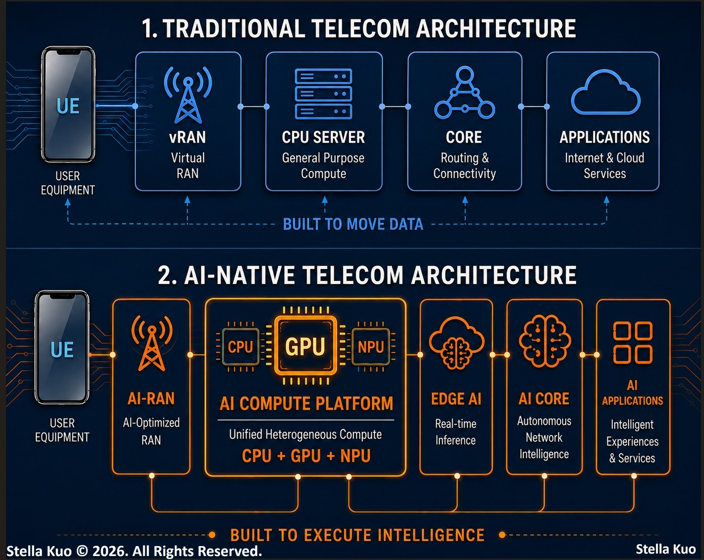

𝐅𝐨𝐫 𝐝𝐞𝐜𝐚𝐝𝐞𝐬, 𝐭𝐞𝐥𝐞𝐜𝐨𝐦 𝐧𝐞𝐭𝐰𝐨𝐫𝐤𝐬 𝐰𝐞𝐫𝐞 𝐛𝐮𝐢𝐥𝐭 𝐭𝐨 𝐭𝐫𝐚𝐧𝐬𝐩𝐨𝐫𝐭 𝐝𝐚𝐭𝐚.
𝐓𝐡𝐞 𝐧𝐞𝐱𝐭 𝐠𝐞𝐧𝐞𝐫𝐚𝐭𝐢𝐨𝐧 𝐰𝐢𝐥𝐥 𝐞𝐱𝐞𝐜𝐮𝐭𝐞 𝐢𝐧𝐭𝐞𝐥𝐥𝐢𝐠𝐞𝐧𝐜𝐞.
That's one of the biggest architectural shifts telecom has seen in decades.
For years, CPU-based infrastructure was the perfect fit.
Networks had one job.
Move packets as efficiently as possible.
Predictable workloads.
Deterministic routing.
Optimized packet processing.
𝐁𝐮𝐭 𝐀𝐈 𝐢𝐬 𝐜𝐡𝐚𝐧𝐠𝐢𝐧𝐠 𝐭𝐡𝐞 𝐣𝐨𝐛 𝐝𝐞𝐬𝐜𝐫𝐢𝐩𝐭𝐢𝐨𝐧.
Today's networks aren't just expected to transport data.
𝐓𝐡𝐞𝐲'𝐫𝐞 𝐞𝐱𝐩𝐞𝐜𝐭𝐞𝐝 𝐭𝐨 𝐫𝐮𝐧 𝐢𝐧𝐭𝐞𝐥𝐥𝐢𝐠𝐞𝐧𝐜𝐞.
• AI inference
• AI-RAN optimization
• Edge AI
• Autonomous network orchestration
These aren't traditional networking workloads.
They're massively parallel compute problems.
𝐄𝐱𝐚𝐜𝐭𝐥𝐲 𝐭𝐡𝐞 𝐤𝐢𝐧𝐝 𝐨𝐟 𝐰𝐨𝐫𝐤𝐥𝐨𝐚𝐝𝐬 𝐆𝐏𝐔𝐬 𝐰𝐞𝐫𝐞 𝐝𝐞𝐬𝐢𝐠𝐧𝐞𝐝 𝐭𝐨 𝐚𝐜𝐜𝐞𝐥𝐞𝐫𝐚𝐭𝐞.
This is why GPUs are moving into telecom infrastructure.
Not as optional accelerators.
𝐀𝐬 𝐩𝐚𝐫𝐭 𝐨𝐟 𝐭𝐡𝐞 𝐧𝐞𝐭𝐰𝐨𝐫𝐤 𝐢𝐭𝐬𝐞𝐥𝐟.
The base station is becoming a compute node.
The edge is becoming an AI execution platform.
The network is evolving into a distributed computing fabric.
The question is no longer:
"𝐃𝐨 𝐆𝐏𝐔𝐬 𝐛𝐞𝐥𝐨𝐧𝐠 𝐢𝐧 𝐭𝐞𝐥𝐞𝐜𝐨𝐦?"
It's:
"𝐇𝐨𝐰 𝐰𝐢𝐥𝐥 𝐀𝐈-𝐧𝐚𝐭𝐢𝐯𝐞 𝐢𝐧𝐟𝐫𝐚𝐬𝐭𝐫𝐮𝐜𝐭𝐮𝐫𝐞 𝐫𝐞𝐝𝐞𝐟𝐢𝐧𝐞 𝐭𝐡𝐞 𝐞𝐧𝐭𝐢𝐫𝐞 𝐭𝐞𝐥𝐞𝐜𝐨𝐦 𝐬𝐭𝐚𝐜𝐤?"
Because in tomorrow's networks,
Connectivity becomes the foundation.
𝐈𝐧𝐭𝐞𝐥𝐥𝐢𝐠𝐞𝐧𝐜𝐞 𝐛𝐞𝐜𝐨𝐦𝐞𝐬 𝐭𝐡𝐞 𝐜𝐨𝐦𝐩𝐞𝐭𝐢𝐭𝐢𝐯𝐞 𝐚𝐝𝐯𝐚𝐧𝐭𝐚𝐠𝐞.
The operators that create the most value won't simply move more traffic.
𝐓𝐡𝐞𝐲'𝐥𝐥 𝐞𝐱𝐞𝐜𝐮𝐭𝐞 𝐦𝐨𝐫𝐞 𝐢𝐧𝐭𝐞𝐥𝐥𝐢𝐠𝐞𝐧𝐜𝐞.
What changes first, in your opinion?
RAN, Edge, Core...
Or does AI force us to rethink the entire telecom architecture?
#Telecom #AI #EdgeComputing #AIRAN #GPUs #NetworkArchitecture
